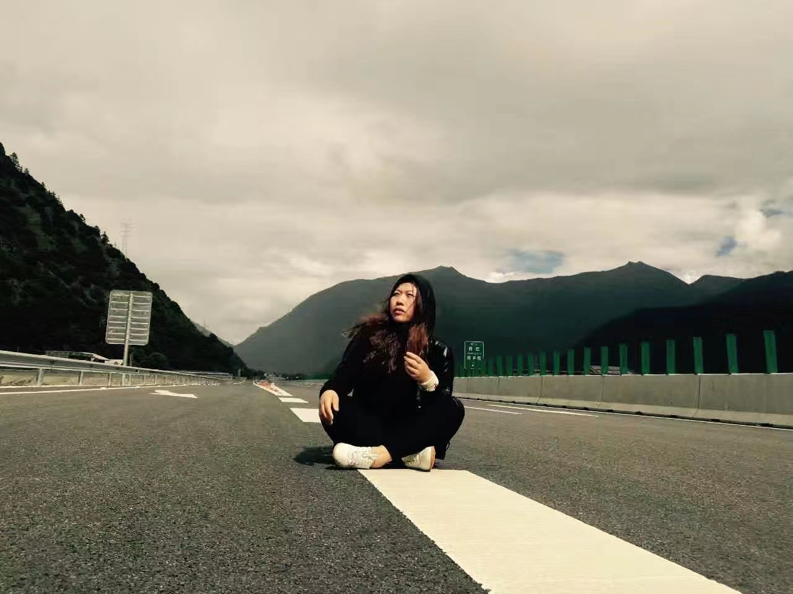

时光荏苒，日月如梭，转眼间我都已经陪伴了您20年岁月了。仿佛刚刚还是那个被您带着见世面，到处玩的小女孩，现在却长成了可以独当一面的大人了。回首往事，那些回忆历历在目，感慨万分。
记得小时候，您常常带着我和您的朋友们出去玩。那个时候您教会了我许多做人的道理。您告诉我，要懂得帮助别人，以至于每次都让我将打包好的饭菜交给流浪汉。您还教会我要懂得反击，当别人欺负你时，一定要打回去。还记得那个时候您常常给我说：“如果受欺负了一定要揍回去，就算是打到骨折妈妈都不会怪你的。“ 这句话我一直记到现在。
上学后，我遇到了许多不同的人，拥有了许多不同的经历。而您总是在我需要的时候，做我的倾诉桶，并给予了我很多建议。有时我总有些恍惚地觉得您是无所不能的超人，因为无论我遇到了什么事，您都是我的依靠。
回想起那次的川藏之行，仿佛是昨天的事情。那时您总告诉我不要玩手机，但我却因年纪小而被手机所束缚住，并不知道自己即将错过多少沿途的美丽风景。现在想想真是后悔万分。您带着我走过了雪山草原，看到了布达拉宫的历史与辉煌。我虽然因为高原反应没有亲眼目睹那些湖光山色，但您代替我爬了上去，并用手机将那美丽的画面分享给了我。那时您说：“妈妈答应你，一定爬上去让你看到。” 每当我回想起这个瞬间，心里总是有数不尽的激动与感动。

现如今我在国外上学，回家的次数也是屈指可数。但或许是由于年龄的增长，又或许是因为离家时间太长，我常常会想起还在家时的种种。与家人，与朋友，甚至是与67的回忆，一直萦绕耳畔挥之不去。虽然我们相隔千里，但是我们无话不谈，您就像是我最亲近的朋友，我会在您面前毫无保留地分享自己的快乐和忧愁，而您也会给我倾诉您在生活中的喜悦与痛苦。这让我总产生一种错觉，我们好似，从未分离。
妈妈生日快乐🎂生日会是一个全新的开始，祝你每天开心，心想事成，越来越漂亮！！
妈妈我爱你！！！
爱你的女儿 2023.12.24
created with
Website Builder Software .